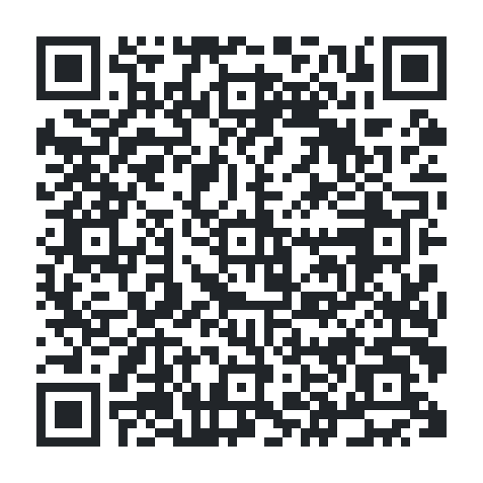

Código Ético
Canal de denuncias de Estudio y Gestión Formación y Proyectos S.L., gestionado por la entidad independiente BSCert Europe.

Accede al canal
El QR habilitado en Estudio y Gestión Formación y Proyectos S.L. para dirigirse a su propio canal de denuncias es el que se muestra en esta página. Escanéalo con la cámara de tu teléfono o pulsa el botón para acceder.
{kind=link}
{kind=link}
Canal de Denuncias BSCert Europe
BSCert Europe es una entidad independiente de certificación y homologación de procedimientos que realiza su actividad principal en España. La experiencia y confiabilidad de nuestro equipo humano es nuestra mayor garantía para la satisfacción de nuestros clientes.
A través de nuestro canal de denuncias, proporcionamos una herramienta segura, eficaz y amigable que permite a las partes interesadas realizar el proceso de denuncia estipulado en la legislación con pleno cumplimiento de la ley y la máxima protección de los derechos que asisten a denunciante y denunciado.
Si bien nuestro sistema es altamente tecnológico, siempre lleva acompañado un soporte de acompañamiento en la retaguardia. Porque en BSCERT EUROPE creemos en las personas y nuestro equipo humano es nuestra mejor herramienta de trabajo.
Herramienta técnica
La tecnología que pondremos a disposición de todos nuestros clientes se basa en el hecho claro de que el acceso al canal de denuncias debe ser sencillo, claro y seguro. Por ello la herramienta principal de nuestro servicio es nuestra página web www.canaldedenuncias-bscerteurope.com que irá siempre acompañado de un QR informativo por si el cliente decide utilizarlo en documentación escrita.
Recordemos que una de las características obligatorias del canal es que debe ser público y de fácil acceso. En la página web se pone a disposición del usuario información acerca de la ley y del uso del canal, y en la misma web se inicia el proceso de denuncia, dando la doble opción que exige la ley. Opción escrita, y opción oral.
En todo el proceso se informa al denunciante que sus datos serán recibidos por BSCert Europe, y se le dará la opción ineludible de elegir si desea que sean compartidos con el denunciante de forma íntegra o anonimizada. En todo caso, las denuncias se anonimizarán a los tres meses de su recepción como indica la legislación.
La ley está escrita con una clara vocación de protección al denunciante, y por ello esta debe ser una de las premisas fundamentales de nuestra herramienta. En todo momento se explica mediante texto, y obligación de leer y comprender lo escrito con casillas que no permiten la continuidad en caso de no ser marcadas, como marca la legislación, el mecanismo del canal. El denunciante puede elegir qué datos serán compartidos con el denunciado, y cuáles no. Y se recuerda la obligación de la anonimización de la misma a los tres meses de su entrada en el sistema.